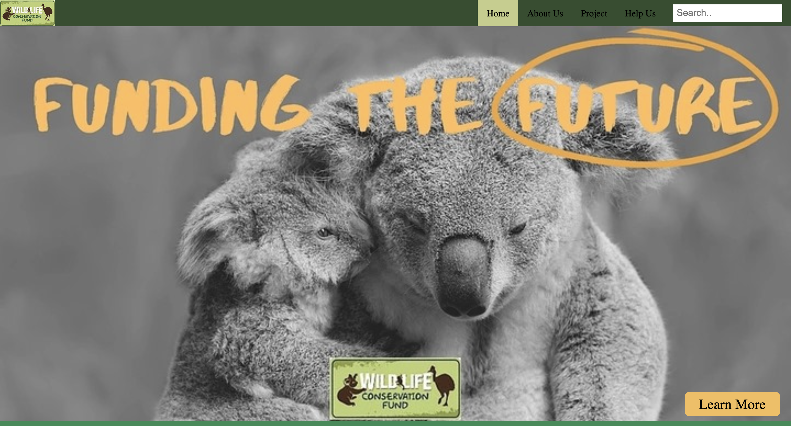
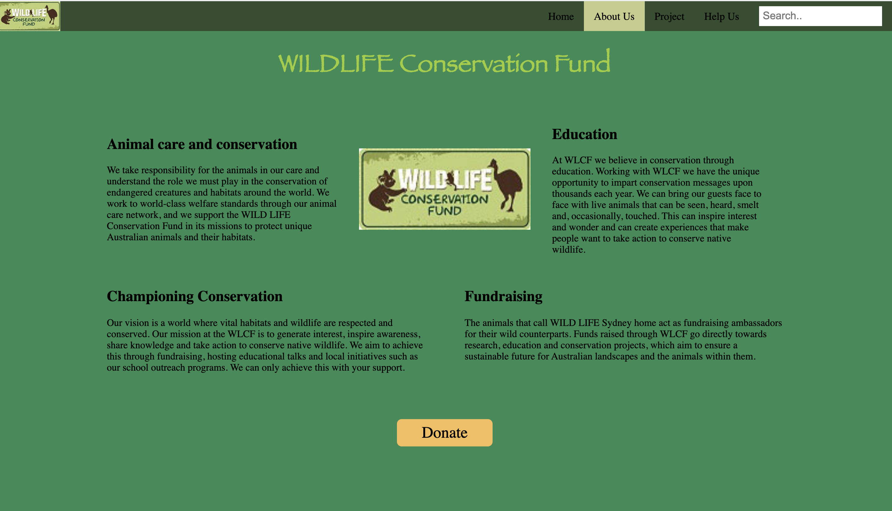
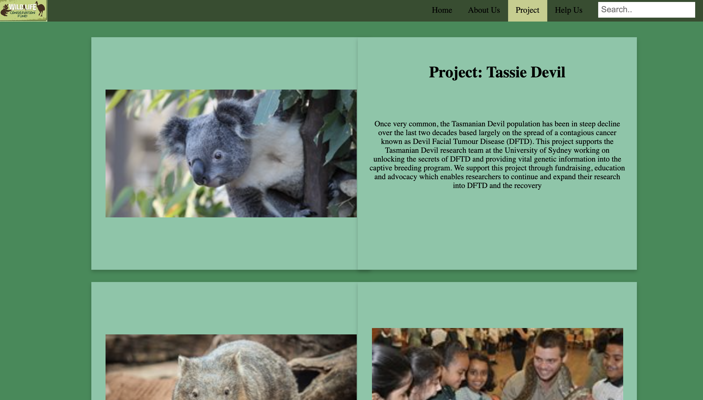
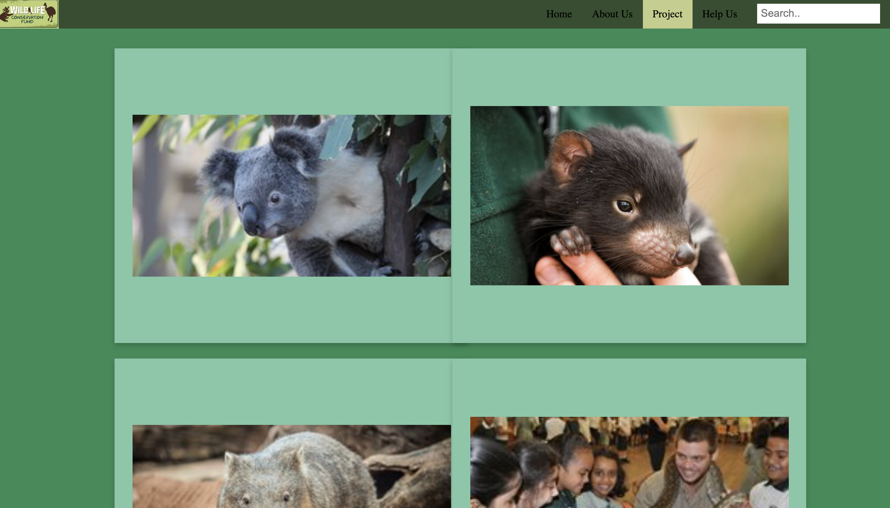
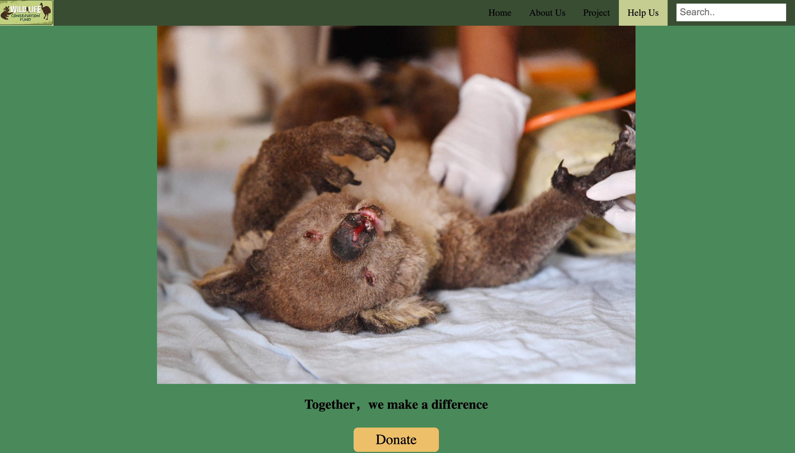
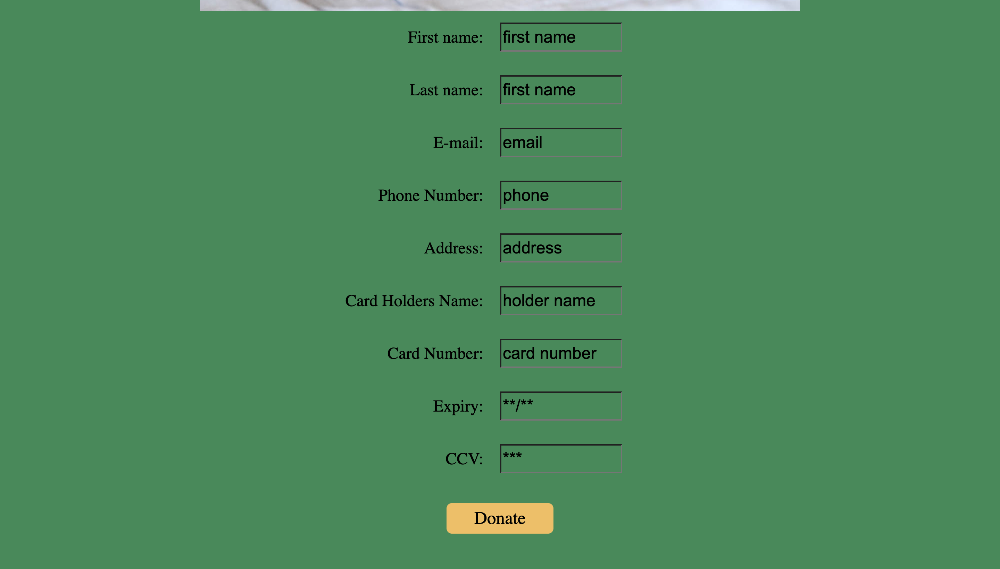

Design Patterns And Principle
The color contrast that I have implied to the website is much more clear this time, I have used the lighter green as background color which is RGB #2B8C55, and black color #000000 as the foreground text color, I have tested these two colors in the WebAim -- Contrast checker, all the ratio has passed.
The information pages (about us page and project page)focus on the balance and alignment of the design. The text and the color used in these two information pages are carefully aligned and matched.
Web Prototype
     Design changes and Iterations
The first thing that I have changed is the background color from a dark green to a lighter green, as all the feedback that I have gathered, the contrast between the drak green color background and black color text is not enough,however as my design concept of the wild life conservation fund, green represents the life and hope, so I will keep using green, but choose a lighter one which fit the need of the contrast.
I have created a better hierarchy and information architecture on the information page by clearly separating headings and body text, to create interest on the infor page which contains large amount of text, I have used the flip card code to mangage the pictures and the texts, to make the page much more fun, and stories much more easliy to be matched with different pictures.
I have also created a very clear call to action, the donate button to engage with the user inputs, and encourage the users to support the fund. Also, the website is usable on mobile, ipad and desktop devices.
References
Koala(n.d.) WILD LIFE Sydney ZOO is OPEN! Retrieved from https://www.wildlifesydney.com.au/
Wombat(n.d.) WILD LIFE Sydney Zoo Retrieved from https://www.wildlifesydney.com.au/responsible-business/
Tassie Dvill(n.d.) ANIMAL CARE AND CONSERVATION Retrieved from https://www.wildlifesydney.com.au/responsible-business/animal-care-and-conservation/
School Reach out(n.d.) ANIMAL CARE AND CONSERVATION Retrieved from https://www.wildlifesydney.com.au/responsible-business/animal-care-and-conservation/
burned koala (2020) Bushfire crisis: Australia may list koalas as 'endangered' species Retrieved from https://economictimes.indiatimes.com/magazines/panache/bushfire-crisis-australia-may-list-koalas-as-endangered-species/articleshow/73226539.cms